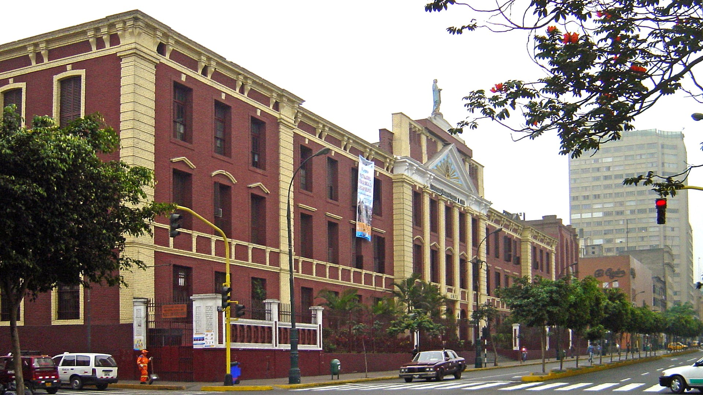
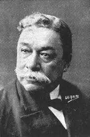
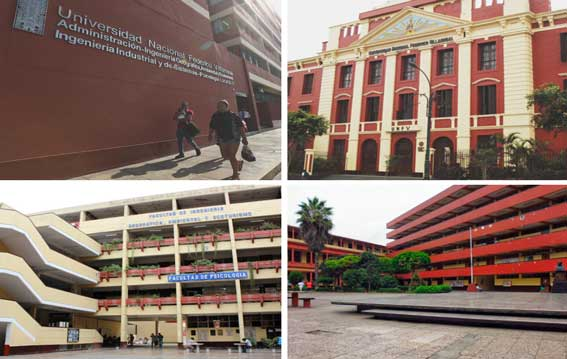

RESEÑA HISTÓRICA
RESEÑA HISTÓRICA|
 La Universidad Nacional Federico Villarreal (UNFV) se creó como Universidad Autónoma el 30 de octubre de 1963, mediante ley número 14692, promulgada por el gobierno constitucional del presidente Fernando Belaunde Terry. La UNFV ostenta con orgullo el nombre del insigne sabio peruano Federico Villarreal, quien durante su vida incursionó en casi todos los campos del saber humano, dedicándose íntegramente al estudio de las ciencias, la investigación y a la docencia.El origen de la Universidad Villarreal se remonta a la época en la que funcionó como filial en Lima de la Universidad Comunal del Centro (UCC) del Perú, fundada en diciembre de 1959 y que contó con filiales de acuerdo a las especialidades que ofrecía. Como la actividad académica de la Universidad Comunal estaba circunscrita a la ciudad de Huancayo, en 1960 un grupo de empleados bancarios limeños realizaron una asamblea en la cual acordaron constituirse en comité profacultades de Lima. El doctor Javier Pulgar Vidal, hombre de ciencia e ilustre maestro universitario fue el gestor de la universidad; lo acompañaron Ramiro Prialé, Jesús Véliz Lizárraga, César Solís, Manuel Gutièrrez Aliaga y Luis Vega Fernández en la redacción y firma de la escritura de fundación. La filial de Lima inició sus actividades en una casona alquilada, ubicada en el jirón Moquegua 262, Lima. Los exámenes de ingreso se fijaron para el mes de agosto de 1960 y las clases se iniciaron el 16 de setiembre del mismo año. En 1961 se reconoció a la UCC como Universidad Nacional del Centro del Perú. Al surgir diferencias con la sede central, los docentes y estudiantes de la filial Lima, en sesión de consejo universitario del 21 de enero de 1963, declararon su autonomía y solicitaron al gobierno se les reconozca como tal. El 18 de octubre de 1963 el Congreso de la República, presidido por el senador Julio de la Piedra, aprobó la ley 14692 que reconoce como Universidad Nacional Federico Villarreal a la ex filial de Lima, promulgada por el gobierno central el 30 de octubre del mismo año. El 24 de mayo de 1964 se eligió al doctor Óscar Herrera Marquis como primer rector. Las primeras facultades fueron: Comercio, Contabilidad y Cálculo Actuarial, siendo su primer decano el doctor Luis Arana Maradiegue; Economía, Estadística y Finanzas, su decano el doctor Carlos Manuel Cox; Administración Pública y Privada, su decano el ingeniero Luis Heysen Incháustegui‚ y Acuicultura y Oceanografía, su decano el doctor Erwin Schweigger. A partir del 1° de abril de 1961 funcionaron las facultades de Educación, con su decano el doctor Justo E. Debarbieri Riojas; y Arquitectura, su decano el arquitecto Henry Biber Poillevard. Villarreal cuenta con 18 facultades, 60 programas de estudio, una Escuela Universitaria de Postgrado y un centro de estudios preuniversitarios donde se forman a los profesionales con las exigencias del mundo actual. Bajo el liderazgo del doctor Juan Oswaldo Alfaro Bernedo, la UNFV logró luego de un arduo trabajo, su licenciamiento institucional, el pasado 10 de marzo para ofrecer el servicio educativo con una vigencia de seis años. Mediante resolución de Consejo Directivo Nº 035-2020-SUNEDU/CD, la Superintendencia Nacional de Educación Superior Universitaria (SUNEDU), reconoce que se cumple con las condiciones básicas de calidad (CBC) establecidas en la Ley Universitaria 30220. Cabe señalar que entre el 2016 y 2019, la Universidad Villarreal invirtió más de 44,8 millones de soles para reducir la brecha de equipamiento en laboratorios y talleres; así como para complementar acciones de mantenimiento de instalaciones eléctricas, sanitarias, de seguridad en la utilización y para la gestión de residuos; se lograron desarrollar proyectos importantes, como la construcción de edificaciones para las facultades de Ciencias Económicas y de Ciencias Financieras y Contables; y se mejoró la infraestructura en la Facultad de Ciencias Naturales y Matemáticas. El proceso de internacionalización cada año se va fortaleciendo; docentes y estudiantes, vienen participando de los programas de movilidad académica; asimismo, nuestros alumnos obtienen los primeros lugares en los diferentes certámenes de investigación y emprendimiento, tanto a nivel nacional como internacional. |